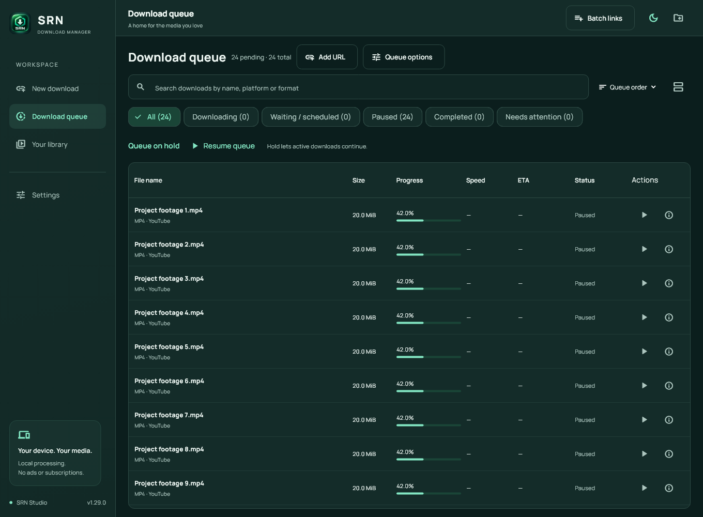

Your queue, at a glance.
Search, filter and sort downloads. Pause, resume or retry supported transfers, and choose what runs next.
YOUR PERSONAL MEDIA SPACE
Your videos. Your music. Your files.
A calmer way to bring them all home.
Free & open source · No ads or subscriptions
LESS CLUTTER. MORE CONTROL.
See what’s moving, what’s waiting,
and what’s ready to enjoy.

Actual desktop interface · v1.29.0 · Sample files shown
Search, filter and sort downloads. Pause, resume or retry supported transfers, and choose what runs next.
Save supported videos as MP4 or audio as MP3. Available quality depends on the source. Direct file links keep their original format.
Manage torrent and magnet jobs, convert local media, verify SHA-256 hashes and find duplicate saved files on Windows.
A LITTLE SPACE ON YOUR DEVICE
FOR YOUR DESK
The full workspace. Files, video, audio,
torrents and your browser, together.
TAKE IT WITH YOU
Share a supported link to SRN.
Choose a format and save to your device.
Release files are being prepared for public download. The website preview is ready.
Connect to SRN official releases from Windows Settings → App updates. The pinned signing key verifies release details, and installer size and SHA-256 are checked before opening setup. Startup checks are optional; downloads and installation always need your action.
Recent improvements include desktop queue sorting, locating moved saved files, exporting history as CSV, duplicate checks and local SHA-256 verification. Windows publisher code signing still needs a trusted certificate.
FROM BROWSER TO LIBRARY
The SRN browser companion puts a download button beside supported YouTube and Instagram videos.
Current release uses manual extension installation.
Keep Browser integration selected in the installer. The app and browser must use the same Windows account.
Extract the companion ZIP to a permanent folder. Open edge://extensions or chrome://extensions, enable Developer mode, select Load unpacked and choose the folder containing manifest.json.
Open the SRN extension and select Check desktop connection. Refresh your media tab, then use Download with SRN to open the app preview.
A FEW HELPFUL DETAILS
A little clarity before you start.
SRN supports available, unprotected media from supported sources. Download only content you own or have permission to save, subject to platform terms. DRM, private-account access and access-control bypass are unsupported. Formats and quality depend on what the source makes available.
On Chrome and Edge, the enabled companion can hand eligible safe direct HTTPS downloads to SRN, with no minimum size. Unsupported, incognito and browser-flagged items stay in the browser. You can pause capture for 10 minutes or exclude hosts and file types from the popup.
Use the ARM64 APK on a compatible Android 10 or newer device. Open it and allow installation from your chosen file manager when Android asks. An existing SRN installation must have the same signing identity to update. A package conflict needs diagnosis; avoid uninstalling before backing up important app data. The current APK has passed build/signature checks; this release has not yet been installed on a physical device.
A local Firefox companion supports manual send actions and supported player buttons. Permanent installation awaits Mozilla signing. Automatic browser file capture currently supports Chrome and Edge.
Ordinary media and file downloads go from their source to your device. SRN has no publisher account or analytics service. BitTorrent jobs communicate with peers and trackers and can upload pieces. You control torrent seeding settings. Read the privacy page for local history and network details.
On Windows 1.30.0 or newer, open Settings → App updates → Use SRN official releases, then Check for updates. Enable startup checks separately if you want them. A verified newer release offers Review update. Downloads and installation always need your action. Release manifests expire after 30 days and are renewed by the publisher. The release signature is separate from Windows publisher code signing.
MADE FOR KEEPING